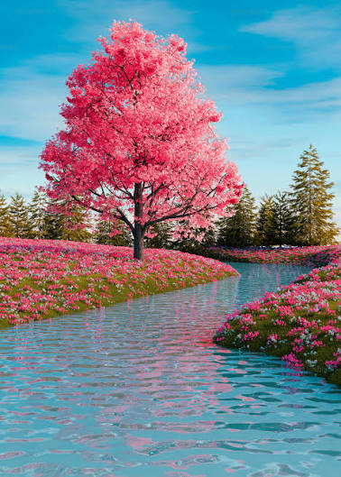

Nuestra Colección de Paisajes
Disfruta de los diferentes ángulos y estilos aplicados a cada una de nuestras fotografías:


Disfruta de los diferentes ángulos y estilos aplicados a cada una de nuestras fotografías:
